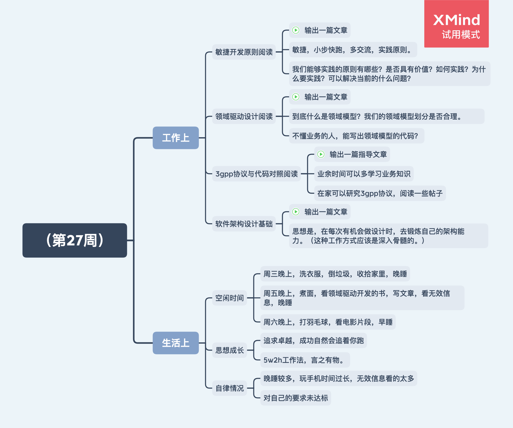

（第27周）
日期：2020/7/5

工作上
敏捷开发原则阅读
- 输出一篇文章
- 敏捷，小步快跑，多交流，实践原则。
- 我们能够实践的原则有哪些？是否具有价值？如何实践？为什么要实践？可以解决当前的什么问题？
领域驱动设计阅读
- 输出一篇文章
- 到底什么是领域模型？我们的领域模型划分是否合理。
- 不懂业务的人，能写出领域模型的代码？
3gpp协议与代码对照阅读
- 输出一篇指导文章
- 业余时间可以多学习业务知识
- 在家可以研究3gpp协议，阅读一些帖子
软件架构设计基础
- 输出一篇文章
- 思想是，在每次有机会做设计时，去锻炼自己的架构能力。（这种工作方式应该是深入骨髓的。）
生活上
空闲时间
- 周三晚上，洗衣服，倒垃圾，收拾家里，晚睡
- 周五晚上，煮面，看领域驱动开发的书，写文章，看无效信息，晚睡
- 周六晚上，打羽毛球，看电影片段，早睡
思想成长
- 追求卓越，成功自然会追着你跑
- 5w2h工作法，言之有物。
自律情况
- 晚睡较多，玩手机时间过长，无效信息看的太多
- 对自己的要求未达标
下周展望
- 至少完成一篇上述要求的文章输出
- 自律提升，做到对自己的要求